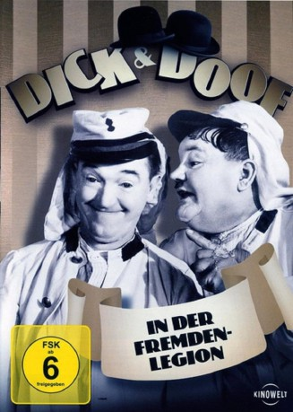
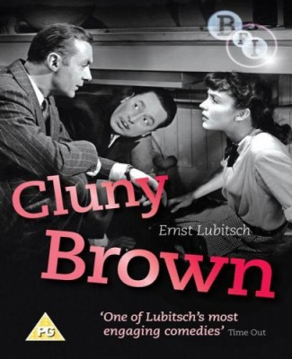
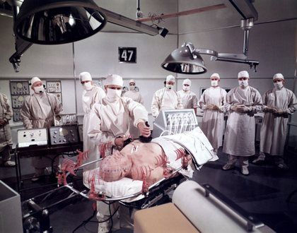

#4759 Dick und Doof in der Fremdenlegion
Alternativ: The Flying Deuces
 
 IMDB-Wertung: 6.9 / 10
IMDB-Wertung: 6.9 / 10  Metascore: 0
Metascore: 0 
Ollie hat Liebeskummer. Um sich abzulenken, meldet er sich mit Stan zur Fremdenlegion. In der marokkanischen Wüste fallen die beiden bei ihren Vorgesetzten schnell in Ungnade. Ein Versuch zu desertieren, besiegelt ihr Schicksal: Im Morgengrauen droht dem Paar die Hinrichtung
Jahr: 1939
Dauer: 67 Minuten
FSK:
Land: USA Studio: RKO Radio Pictures, Inc.Tonspuren:
Untertitel:
Auflösung: 1080p (1920x1080) Größe: 11776 MB
Genre: Komödie, Krieg
Regisseur: A. Edward Sutherland
Drehbuch: Danny Strong
Soundtrack:
Darsteller:
 Stan Laurel als Stan
Stan Laurel als Stan Oliver Hardy als Ollie
Oliver Hardy als Ollie- Jean Parker als Georgette
-  Reginald Gardiner als Francois
 Charles Middleton als Commandant
Charles Middleton als Commandant-  Jean Del Val als Sergeant
 James Finlayson als Jailor
James Finlayson als Jailor- Monica Bannister als Georgette's Girl Friend , uncredited
- Eddie Borden als Legionnaire , uncredited
- Richard Cramer als Laundry Truck Driver , uncredited
- Billy Engle als Legionnaire , uncredited
- Kit Guard als Legionnaire , uncredited
- Crane Whitley als Corporal
- Bonnie Bannon als Georgette's Girl Friend , uncredited
- Christine Cabanne als Georgette's Girl Friend , uncredited
- Mary Jane Carey als Georgette's Girl Friend , uncredited
- Jack Chefe als Legionnaire , uncredited
- Frank Clarke als Pilot , uncredited
- Arthur Housman als Drunk Legionnaire , uncredited
- Sam Lufkin als Legionnaire , uncredited
Datei: X:\1900-1949\Dick und Doof in der Fremdenlegion (1939, FSK, 1920x1080).mkv seit 14.11.2016
Festplatte: HD 1900-1970
 Es gibt insgesamt 80 Filme in der Gruppe '1900-1949'
Es gibt insgesamt 80 Filme in der Gruppe '1900-1949'